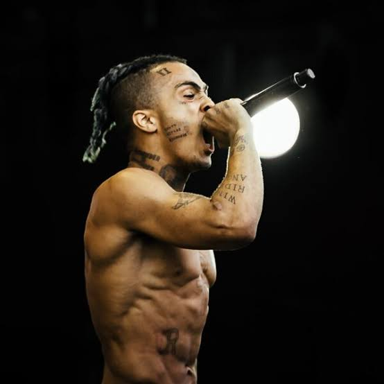

Jahseh Dwayne Ricardo Onfroy, known professionally as XXXTentacion, was a groundbreaking artist whose music transcended genres. Born on January 23, 1998, in Plantation, Florida, he rose to fame through SoundCloud, captivating millions with his raw emotion, unique sound, and deeply personal lyrics. Tragically, his life was cut short on June 18, 2018, at just 20 years old. Despite his untimely passing, XXXTentacion's legacy continues to inspire a new generation of artists and fans.